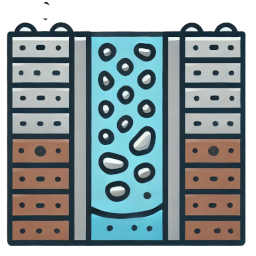

Activated Sludge Model (Simple)

Infiltration Trench
Activated Sludge Model (Simple)
Infiltration Trench
GreenInfraIQ provides open-access, web-based modeling tools for analyzing and designing green infrastructure systems. Use our tools to simulate bioretention systems, infiltration basins, stormwater ponds, and permeable pavements. Powered by the OpenHydroQual engine, these models support data-driven decision making for stormwater management, water quality, and sustainable urban infrastructure.